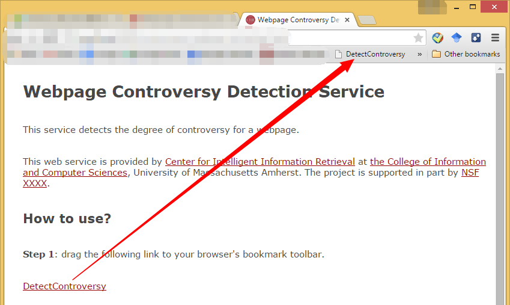
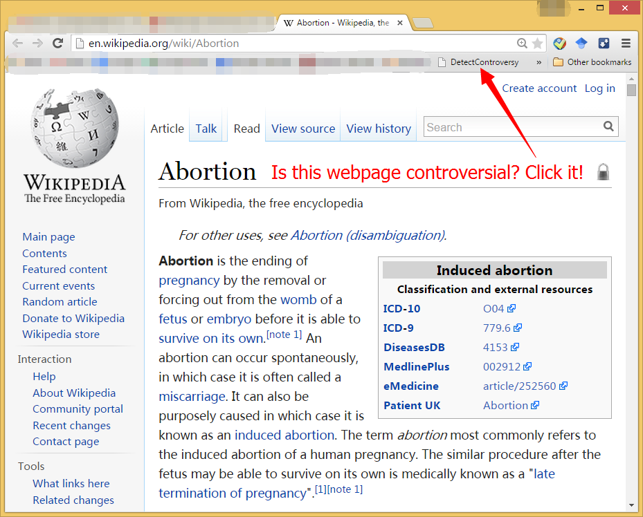
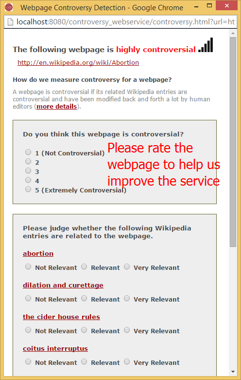
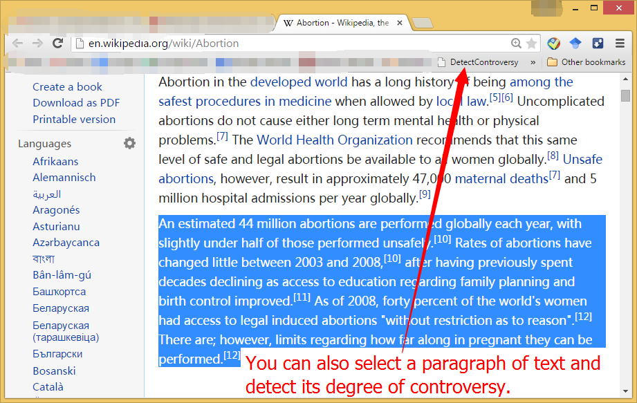

This service detects the degree of controversy for a webpage.
This web service is provided by Center for Intelligent Information Retrieval at the College of Information and Computer Sciences, University of Massachusetts Amherst. The project is supported in part by NSF XXXX.
Step 1: drag the following link to your browser's bookmark toolbar.

Step 2: when visiting a webpage, simply click the DetectControversy bookmark to detect controversy.

Step 3: a pop-up window will show you the degree of controversy for the webpage. Your feedback is greatly appreciated and can help us improve the service.

Step 4: you can also select a paragraph of text from the webpage and click the DetectControversy bookmark to detect the degree of controversy only for the selected text.
